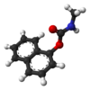

carbaryl

Definition: Carbaryl (1-naphthyl methylcarbamate) is a chemical in the carbamate family used chiefly as an insecticide. It is a white crystalline solid previously sold under the brand name Sevin, which was a trademark of the Bayer Company. The Sevin trademark has since been acquired by GardenTech, which has eliminated carbaryl from most Sevin formulations. Union Carbide discovered carbaryl and introduced it commercially in 1958. Bayer purchased Aventis CropScience in 2002, a company that included Union Carbide pesticide operations. Carbaryl was the third-most-used insecticide in the United States for home gardens, commercial agriculture, and forestry and rangeland protection. As a veterinary drug, it is known as carbaril (INN).
Source: Wikipedia
Wikipedia Page (Something wrong with this association? Let us know.)
Wikidata Page (Something wrong with this association? Let us know.)